QCB 508 – Week 12
John D. Storey
Spring 2017

EDA of HD Data
Rationale
Exploratory data analysis (EDA) of high-dimensional data adds the additional challenge that many variables must be examined simultaneously. Therefore, in addition to the EDA methods we discussed earlier, methods are often employed to organize, visualize, or numerically capture high-dimensional data into lower dimensions.
Examples of EDA approaches applied to HD data include:
- Traditional EDA methods covered earlier
- Cluster analysis
- Dimensionality reduction
Cluster Analysis
An overview of common cluster analysis methods can be found here:
http://sml201.github.io/lectures/week12/week12.html
These slides include:
- Distance measures
- Hierarchical clustering
- \(K\)-means clustering
Example: Cancer Subtypes

Figure from Alizadeh et al. (2000) Nature.
Dimensionality Reduction
The goal of dimensionality reduction is to extract low dimensional representations of high dimensional data that are useful for visualization, exploration, inference, or prediction.
The low dimensional representations should capture key sources of variation in the data.
Some Methods
- Principal component analysis
- Singular value decomposition
- Latent variable modeling
- Vector quantization
- Self-organizing maps
- Multidimensional scaling
Example: Weather Data
These daily temperature data (in tenths of degrees C) come from meteorogical observations for weather stations in the US for the year 2012 provided by NOAA (National Oceanic and Atmospheric Administration).:
> load("./data/weather_data.RData")
> dim(weather_data)
[1] 2811 50
>
> weather_data[1:5, 1:7]
11 16 18 19 27 30 31
AG000060611 138.0000 175.0000 173 164.0000 218 160 163.0000
AGM00060369 158.0000 162.0000 154 159.0000 165 125 171.0000
AGM00060425 272.7619 272.7619 152 163.0000 163 108 158.0000
AGM00060444 128.0000 102.0000 100 111.0000 125 33 125.0000
AGM00060468 105.0000 122.0000 97 263.5714 155 52 263.5714This matrix contains temperature data on 50 days and 2811 stations that were randomly selected.
Convert temperatures to Fahrenheit:
> weather_data <- 0.18*weather_data + 32
> weather_data[1:5, 1:6]
11 16 18 19 27 30
AG000060611 56.84000 63.50000 63.14 61.52000 71.24 60.80
AGM00060369 60.44000 61.16000 59.72 60.62000 61.70 54.50
AGM00060425 81.09714 81.09714 59.36 61.34000 61.34 51.44
AGM00060444 55.04000 50.36000 50.00 51.98000 54.50 37.94
AGM00060468 50.90000 53.96000 49.46 79.44286 59.90 41.36
>
> apply(weather_data, 1, median) %>%
+ quantile(probs=seq(0,1,0.1))
0% 10% 20% 30% 40%
8.886744 49.010000 54.500000 58.460000 62.150000
50% 60% 70% 80% 90%
65.930000 69.679318 73.490000 77.990000 82.940000
100%
140.000000 Here are the 2811 rows converted to a single row that captures the most variation among the rows:
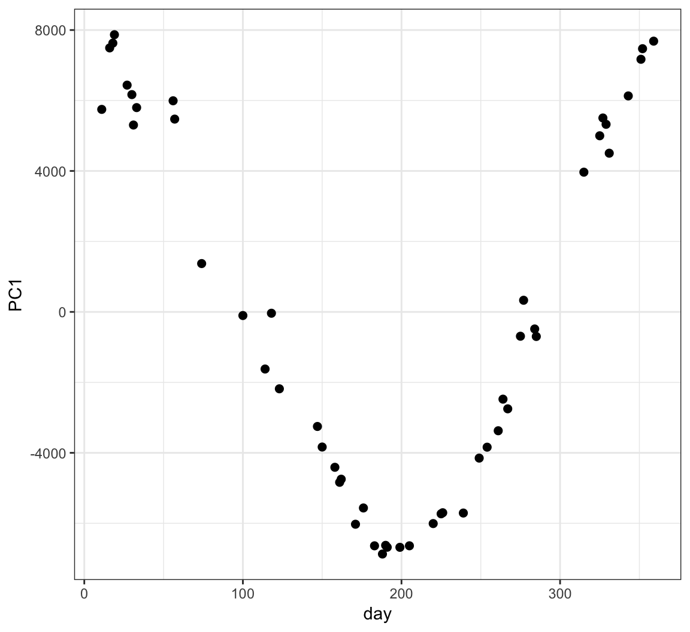
Principal Component Analysis
Goal
For a given set of variables, principal component analysis (PCA) finds (constrained) weighted sums of the variables to produce variables (called principal components) that capture consectuive maximum levels of variation in the data.
Specifically, the first principal component is the weighted sum of the variables that results in a component with the highest variation.
This component is then “removed” from the data, and the second principal component is obtained on the resulting residuals.
This process is repeated until there is no variation left in the data.
Population PCA
Suppose we have \(m\) random variables \(X_1, X_2, \ldots, X_m\). We wish to identify a set of weights \(w_1, w_2, \ldots, w_m\) that maximizes
\[ {\operatorname{Var}}\left(w_1 X_1 + w_2 X_2 + \cdots + w_m X_m \right). \]
However, this is unbounded, so we need to constrain the weights. It turns out that constraining the weights so that
\[ \| {\boldsymbol{w}}\|_2^2 = \sum_{i=1}^m w_i^2 = 1 \]
is both interpretable and mathematically tractable.
Therefore we wish to maximize
\[ {\operatorname{Var}}\left(w_1 X_1 + w_2 X_2 + \cdots + w_m X_m \right) \]
subject to \(\| {\boldsymbol{w}}\|_2^2 = 1\). Let \({\boldsymbol{\Sigma}}\) be the \(m \times m\) population covariance matrix of the random variables \(X_1, X_2, \ldots, X_m\). It follows that
\[ {\operatorname{Var}}\left(w_1 X_1 + w_2 X_2 + \cdots + w_m X_m \right) = {\boldsymbol{w}}^T {\boldsymbol{\Sigma}}{\boldsymbol{w}}. \]
Using a Lagrange multiplier, we wish to maximize
\[ {\boldsymbol{w}}^T {\boldsymbol{\Sigma}}{\boldsymbol{w}}+ \lambda({\boldsymbol{w}}^T {\boldsymbol{w}}- 1). \]
Differentiating with respect to \({\boldsymbol{w}}\) and setting to \({\boldsymbol{0}}\), we get \({\boldsymbol{\Sigma}}{\boldsymbol{w}}- \lambda {\boldsymbol{w}}= 0\) or
\[ {\boldsymbol{\Sigma}}{\boldsymbol{w}}= \lambda {\boldsymbol{w}}. \]
For any such \({\boldsymbol{w}}\) and \(\lambda\) where this holds, note that
\[ {\operatorname{Var}}\left(w_1 X_1 + w_2 X_2 + \cdots + w_m X_m \right) = {\boldsymbol{w}}^T {\boldsymbol{\Sigma}}{\boldsymbol{w}}= \lambda \]
so the variance is \(\lambda\).
The eigendecompositon of a matrix identifies all such solutions to \({\boldsymbol{\Sigma}}{\boldsymbol{w}}= \lambda {\boldsymbol{w}}\). Specifically, it calculates the decompositon
\[ {\boldsymbol{\Sigma}}= {\boldsymbol{W}}{\boldsymbol{\Lambda}}{\boldsymbol{W}}^T \]
where \({\boldsymbol{W}}\) is an \(m \times m\) orthogonal matrix and \({\boldsymbol{\Lambda}}\) is a diagonal matrix with entries \(\lambda_1 \geq \lambda_2 \geq \cdots \geq \lambda_m \geq 0\).
The fact that \({\boldsymbol{W}}\) is orthogonal means \({\boldsymbol{W}}{\boldsymbol{W}}^T = {\boldsymbol{W}}^T {\boldsymbol{W}}= {\boldsymbol{I}}\).
The following therefore hold:
- For each column \(j\) of \({\boldsymbol{W}}\), say \({\boldsymbol{w}}_j\), it follows that \({\boldsymbol{\Sigma}}{\boldsymbol{w}}_j = \lambda_j {\boldsymbol{w}}_j\)
- \(\| {\boldsymbol{w}}_j \|^2_2 = 1\) and \({\boldsymbol{w}}_j^T {\boldsymbol{w}}_k = {\boldsymbol{0}}\) for \(\lambda_j \not= \lambda_k\)
- \({\operatorname{Var}}({\boldsymbol{w}}_j^T {\boldsymbol{X}}) = \lambda_j\)
- \({\operatorname{Var}}({\boldsymbol{w}}_1^T {\boldsymbol{X}}) \geq {\operatorname{Var}}({\boldsymbol{w}}_2^T {\boldsymbol{X}}) \geq \cdots \geq {\operatorname{Var}}({\boldsymbol{w}}_m^T {\boldsymbol{X}})\)
- \({\boldsymbol{\Sigma}}= \sum_{j=1}^m \lambda_j {\boldsymbol{w}}^j {\boldsymbol{w}}_j^T\)
- For \(\lambda_j \not= \lambda_k\), \[{\operatorname{Cov}}({\boldsymbol{w}}_j^T {\boldsymbol{X}}, {\boldsymbol{w}}_k^T {\boldsymbol{X}}) = {\boldsymbol{w}}_j^T {\boldsymbol{\Sigma}}{\boldsymbol{w}}_k = \lambda_k {\boldsymbol{w}}_j^T {\boldsymbol{w}}_k = {\boldsymbol{0}}\]
Population PCs
The \(j\)th population principal component (PC) of \(X_1, X_2, \ldots, X_m\) is
\[ {\boldsymbol{w}}_j^T {\boldsymbol{X}}= w_{1j} X_1 + w_{2j} X_2 + \cdots + w_{mj} X_m \]
where \({\boldsymbol{w}}_j = (w_{1j}, w_{2j}, \ldots, w_{mj})^T\) is column \(j\) of \({\boldsymbol{W}}\) from the eigendecomposition
\[ {\boldsymbol{\Sigma}}= {\boldsymbol{W}}{\boldsymbol{\Lambda}}{\boldsymbol{W}}^T. \]
The column \({\boldsymbol{w}}_j\) are called the loadings of the \(j\)th principal component. The variance explained by the \(j\)th PC is \(\lambda_j\), which is diagonal element \(j\) of \({\boldsymbol{\Lambda}}\).
Sample PCA
Suppose we have \(m\) variables, each with \(n\) observations:
\[ \begin{aligned} {\boldsymbol{x}}_1 & = (x_{11}, x_{12}, \ldots, x_{1n}) \\ {\boldsymbol{x}}_2 & = (x_{21}, x_{22}, \ldots, x_{2n}) \\ \ & \vdots \ \\ {\boldsymbol{x}}_m & = (x_{m1}, x_{m2}, \ldots, x_{mn}) \end{aligned} \]
We can organize these variables into an \(m \times n\) matrix \({\boldsymbol{X}}\) where row \(i\) is \({\boldsymbol{x}}_i\).
PCA can be extended from the population scenario applied to rv’s to the sample scenario applied to the observed data \({\boldsymbol{X}}\).
Consider all possible weighted sums of these variables
\[\tilde{\pmb{x}} = \sum_{i=1}^{m} u_i \pmb{x_i}\]
where we constrain \(\sum_{i=1}^{m} u_i^2 = 1\).
The first principal component of \({\boldsymbol{X}}\) is the results \(\tilde{{\boldsymbol{x}}}\) with maximum sample variance
\[ s^2_{\tilde{{\boldsymbol{x}}}} = \frac{\sum_{j=1}^n \left(\tilde{x}_j - \frac{1}{n} \sum_{k=1}^n \tilde{x}_k \right)^2}{n-1}. \]
This first sample principal component (PC) is then “removed” from the data, and the procedure is repeated until \(\min(m, n-1)\) sample PCs are constructed.
The sample PCs are found in a manner analogous to the population PCs. First, we construct the \(m \times m\) sample covariance matrix \({\boldsymbol{S}}\) with \((i,j)\) entry
\[ s_{ij} = \frac{\sum_{k=1}^n (x_{ik} - \bar{x}_{i\cdot})(x_{jk} - \bar{x}_{j\cdot})}{n-1}. \]
Identifying \({\boldsymbol{u}}\) that maximizes \(s^2_{\tilde{{\boldsymbol{x}}}}\) also maximizes
\[ {\boldsymbol{u}}^T {\boldsymbol{S}}{\boldsymbol{u}}. \]
Following the steps from before, we want to identify \({\boldsymbol{u}}\) and \(\lambda\) where
\[ {\boldsymbol{S}}{\boldsymbol{u}}= \lambda {\boldsymbol{u}}. \]
which is accomplished with the eigendecomposition
\[ {\boldsymbol{S}}= {\boldsymbol{U}}{\boldsymbol{\Lambda}}{\boldsymbol{U}}^T \]
where again \({\boldsymbol{U}}^T {\boldsymbol{U}}= {\boldsymbol{U}}{\boldsymbol{U}}^T = {\boldsymbol{I}}\) and \({\boldsymbol{\Lambda}}\) is a diagonal matrix so that \(\lambda_1 \geq \lambda_2 \geq \cdots \geq \lambda_m \geq 0\).
Sample PCs
Let \(x^*_{ij} = x_{ij} - \bar{x}_{i\cdot}\) be the row-wise mean-centered values of \({\boldsymbol{X}}\), and let \({\boldsymbol{X}}^*\) be the matrix composed of these values. Also, let \({\boldsymbol{u}}_j\) be column \(j\) of \({\boldsymbol{U}}\) from \({\boldsymbol{S}}= {\boldsymbol{U}}{\boldsymbol{\Lambda}}{\boldsymbol{U}}^T\).
Sample PC \(j\) is then
\[ \tilde{{\boldsymbol{x}}}_j = {\boldsymbol{u}}_j^T {\boldsymbol{X}}^* = \sum_{i=1}^m u_{ij} {\boldsymbol{x}}^*_i \]
for \(j = 1, 2, \ldots, \min(m, n-1)\).
The loadings corresponding to PC \(j\) are \({\boldsymbol{u}}_j\).
Note that the mean of PC \(j\) is zero, i.e., that
\[ \frac{1}{n} \sum_{k=1}^n \tilde{x}_{jk} = 0. \]
It can be calculated that the variance of PC \(j\) is
\[ s^2_{\tilde{{\boldsymbol{x}}}_j} = \frac{\sum_{k=1}^n \tilde{x}_{jk}^2}{n-1} = \lambda_j. \]
Proportion of Variance Explained
The proportion of variance explained by PC \(j\) is
\[ \operatorname{PVE}_j = \frac{\lambda_j}{\sum_{k=1}^m \lambda_k}. \]
Singular Value Decomposition
One way in which PCA is performed is to carry out a singular value decomposition (SVD) of the data matrix \({\boldsymbol{X}}\). Let \(q = \min(m, n)\). Recalling that \({\boldsymbol{X}}^*\) is the row-wise mean centered \({\boldsymbol{X}}\), we can take the SVD of \({\boldsymbol{X}}^*/\sqrt{n-1}\) to obtain
\[ \frac{1}{\sqrt{n-1}} {\boldsymbol{X}}^* = {\boldsymbol{U}}{\boldsymbol{D}}{\boldsymbol{V}}^T \]
where \({\boldsymbol{U}}_{m \times q}\), \({\boldsymbol{V}}_{n \times q}\), and diagonal \({\boldsymbol{D}}_{q \times q}\). Also, we have the orthogonality properties \({\boldsymbol{V}}^T {\boldsymbol{V}}= {\boldsymbol{U}}^T {\boldsymbol{U}}= {\boldsymbol{I}}_{q}\). Finally, \({\boldsymbol{D}}\) is composed of diagonal elements \(d_1 \geq d_2 \geq \cdots \geq d_q \geq 0\) where \(d_q = 0\) if \(q = n\).
Note that
\[ {\boldsymbol{S}}= \frac{1}{n-1} {\boldsymbol{X}}^{*} {\boldsymbol{X}}^{*T} = {\boldsymbol{U}}{\boldsymbol{D}}{\boldsymbol{V}}^T \left({\boldsymbol{U}}{\boldsymbol{D}}{\boldsymbol{V}}^T\right)^T = {\boldsymbol{U}}{\boldsymbol{D}}^2 {\boldsymbol{U}}^T. \]
Therefore:
- The variance of PC \(j\) is \(\lambda_j = d_j^2\)
- The loadings of PC \(j\) are contained in the columns of the left-hand matrix from the decomposition of \({\boldsymbol{S}}\) or \({\boldsymbol{X}}^*\)
- PC \(j\) is row \(j\) of \({\boldsymbol{D}}{\boldsymbol{V}}^T\)
My PCA Function
> pca <- function(x, space=c("rows", "columns"),
+ center=TRUE, scale=FALSE) {
+ space <- match.arg(space)
+ if(space=="columns") {x <- t(x)}
+ x <- t(scale(t(x), center=center, scale=scale))
+ x <- x/sqrt(nrow(x)-1)
+ s <- svd(x)
+ loading <- s$u
+ colnames(loading) <- paste0("Loading", 1:ncol(loading))
+ rownames(loading) <- rownames(x)
+ pc <- diag(s$d) %*% t(s$v)
+ rownames(pc) <- paste0("PC", 1:nrow(pc))
+ colnames(pc) <- colnames(x)
+ pve <- s$d^2 / sum(s$d^2)
+ if(space=="columns") {pc <- t(pc); loading <- t(loading)}
+ return(list(pc=pc, loading=loading, pve=pve))
+ }How It Works
Input is as follows:
x: a matrix of numerical valuesspace: either"rows"or"columns", denoting which dimension contains the variablescenter: ifTRUEthen the variables are mean centered before calculating PCsscale: ifTRUEthen the variables are std dev scaled before calculating PCs
Output is a list with the following items:
pc: a matrix of all possible PCsloading: the weights or “loadings” that determined each PCpve: the proportion of variation explained by each PC
Note that the rows or columns of pc and loading have names to let you know on which dimension the values are organized.
The Ubiquitous Example
Here’s an example very frequently encountered to explain PCA, but it’s slightly complicated.
> set.seed(508)
> n <- 70
> z <- sqrt(0.8) * rnorm(n)
> x1 <- z + sqrt(0.2) * rnorm(n)
> x2 <- z + sqrt(0.2) * rnorm(n)
> X <- rbind(x1, x2)
> p <- pca(x=X, space="rows")“The first PC finds the direction of maximal variance in the data…”

The above figure was made with the following code:
> df <- data.frame(x1=c(x1, lm(x1 ~ p$pc[1,])$fit),
+ x2=c(x2, lm(x2 ~ p$pc[1,])$fit),
+ legend=c(rep("data",n),rep("pc1_projection",n)))
> ggplot(df) + geom_point(aes(x=x1,y=x2,color=legend)) +
+ scale_color_manual(values=c("blue", "red"))The red dots are therefore the projection of x1 and x2 onto the first PC, so they are neither the loadings nor the PC.
Note that
outer(p$loading[,1], p$pc[1,])[1,] + mean(x1)
# yields the same as
lm(x1 ~ p$pc[1,])$fit # and
outer(p$loading[,1], p$pc[1,])[2,] + mean(x2)
# yields the same as
lm(x2 ~ p$pc[1,])$fitHere is PC1 vs PC2:
> data.frame(pc1=p$pc[1,], pc2=p$pc[2,]) %>%
+ ggplot() + geom_point(aes(x=pc1,y=pc2)) +
+ theme(aspect.ratio=1)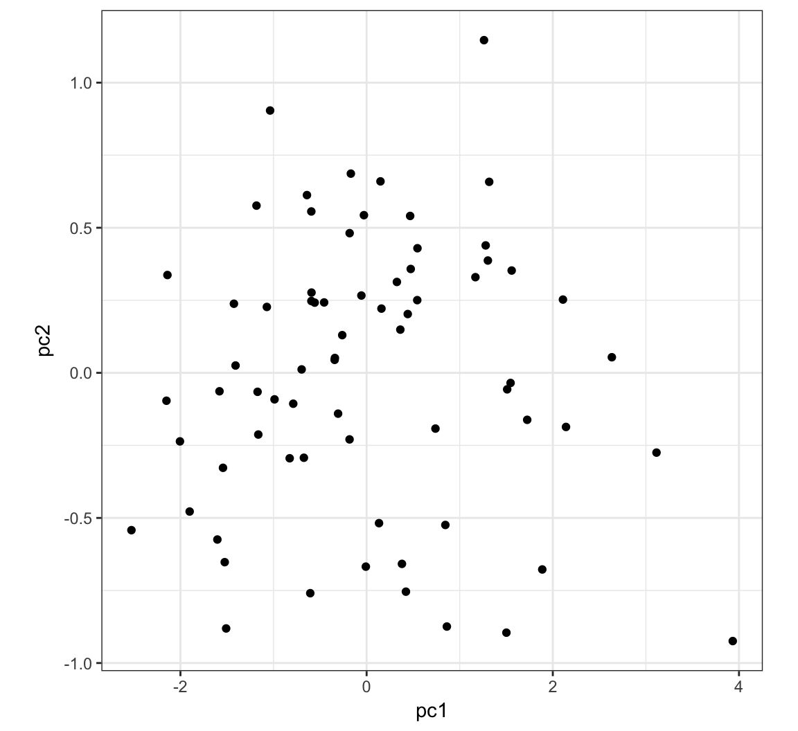
Here is PC1 vs x1:
> data.frame(pc1=p$pc[1,], x1=x1) %>%
+ ggplot() + geom_point(aes(x=pc1,y=x1)) +
+ theme(aspect.ratio=1)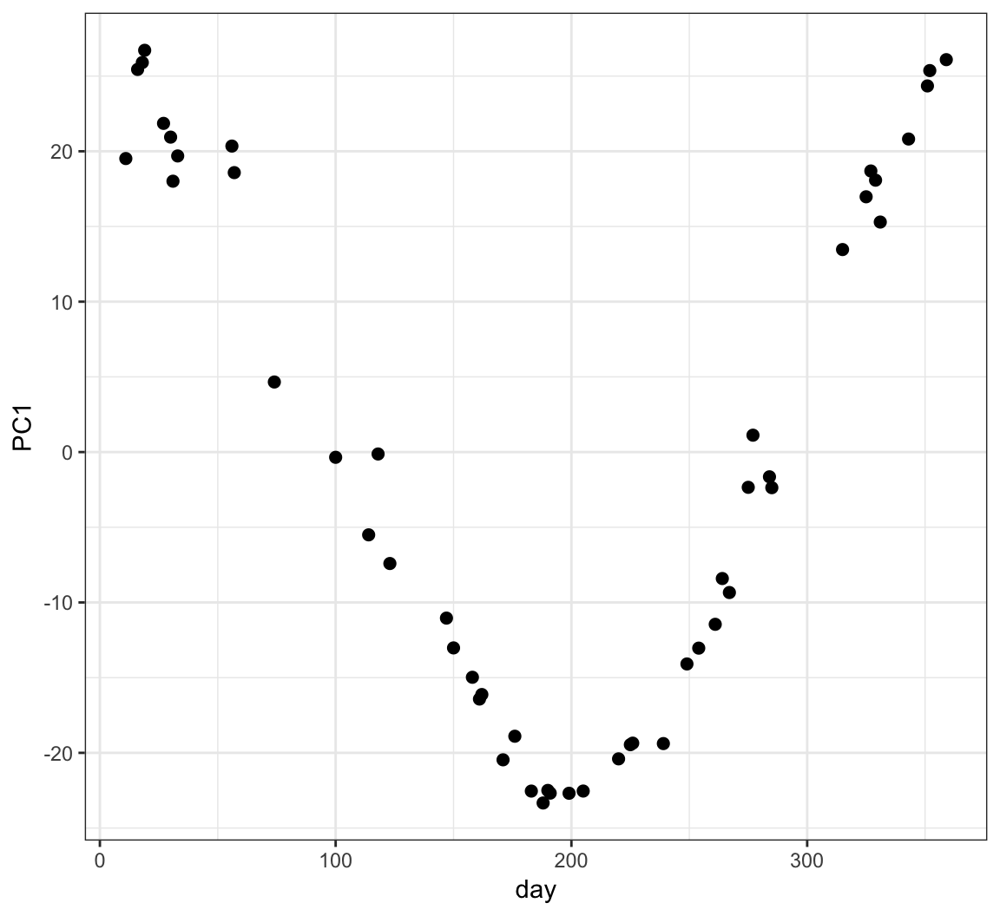
Here is PC1 vs x2:
> data.frame(pc1=p$pc[1,], x2=x2) %>%
+ ggplot() + geom_point(aes(x=pc1,y=x2)) +
+ theme(aspect.ratio=1)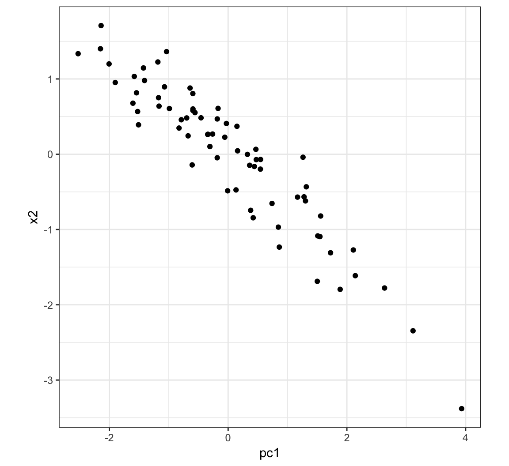
Here is PC1 vs z:
> data.frame(pc1=p$pc[1,], z=z) %>%
+ ggplot() + geom_point(aes(x=pc1,y=z)) +
+ theme(aspect.ratio=1)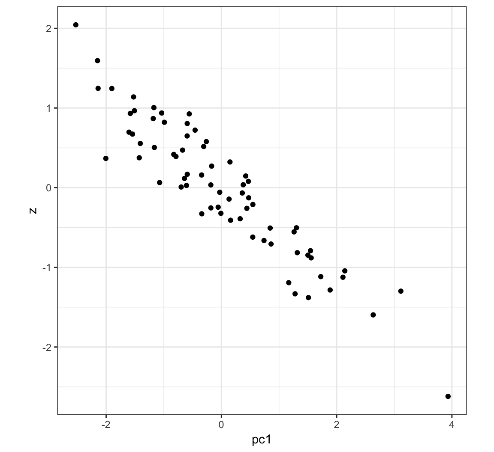
PCA Examples
Weather Data
> mypca <- pca(weather_data, space="rows")
>
> names(mypca)
[1] "pc" "loading" "pve"
> dim(mypca$pc)
[1] 50 50
> dim(mypca$loading)
[1] 2811 50> mypca$pc[1:3, 1:3]
11 16 18
PC1 19.5166741 25.441401 25.9023874
PC2 -2.6025225 -4.310673 0.9707207
PC3 -0.6681223 -1.240748 -3.7276658
> mypca$loading[1:3, 1:3]
Loading1 Loading2 Loading3
AG000060611 -0.015172744 0.013033849 -0.011273121
AGM00060369 -0.009439176 0.016884418 -0.004611284
AGM00060425 -0.015779138 0.007026312 -0.009907972PC1 vs Time
> day_of_the_year <- as.numeric(colnames(weather_data))
> data.frame(day=day_of_the_year, PC1=mypca$pc[1,]) %>%
+ ggplot() + geom_point(aes(x=day, y=PC1), size=2)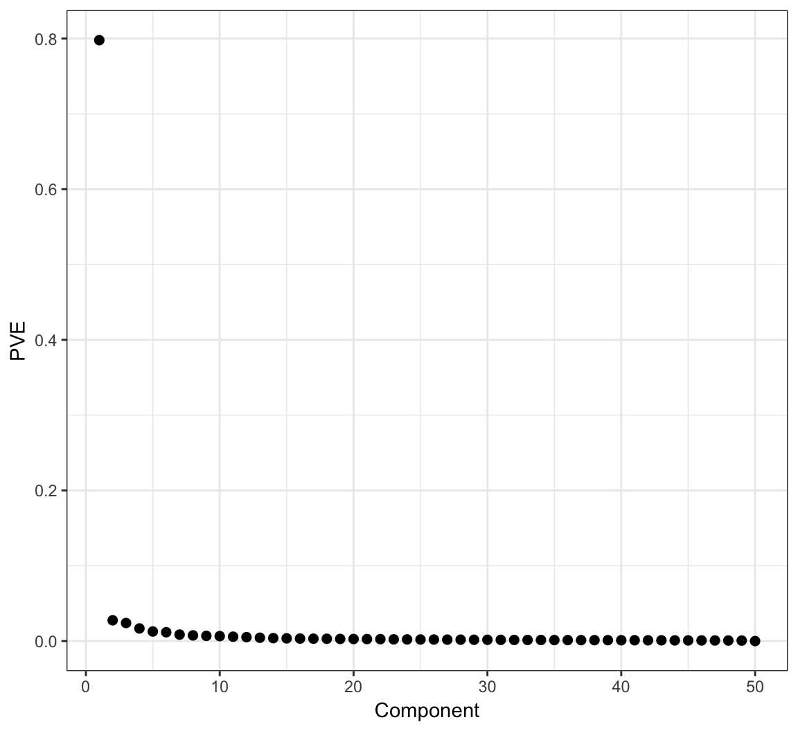
PC2 vs Time
> data.frame(day=day_of_the_year, PC2=mypca$pc[2,]) %>%
+ ggplot() + geom_point(aes(x=day, y=PC2), size=2)
PC Biplots
Sometimes it is informative to plot a PC versus another PC. This is called a PC biplot.
It is possible that interesting subgroups or clusters of observations will emerge.
This does not appear to be the case in the weather data set, however, due to what we observe in the next two plots.
PC1 vs PC2 Biplot
> data.frame(PC1=mypca$pc[1,], PC2=mypca$pc[2,]) %>%
+ ggplot() + geom_point(aes(x=PC1, y=PC2), size=2)
Proportion of Variance Explained
> data.frame(Component=1:length(mypca$pve), PVE=mypca$pve) %>%
+ ggplot() + geom_point(aes(x=Component, y=PVE), size=2)
PCs Reproduce the Data
We can multiple the loadings matrix by the PCs matrix to reproduce the data:
> # mean centered weather data
> weather_data_mc <- weather_data - rowMeans(weather_data)
>
> # difference between the PC projections and the data
> # the small sum is just machine imprecision
> sum(abs(weather_data_mc/sqrt(nrow(weather_data_mc)-1) -
+ mypca$loading %*% mypca$pc))
[1] 1.329755e-10Loadings
The sum of squared weights – i.e., loadings – equals one for each component:
> sum(mypca$loading[,1]^2)
[1] 1
>
> apply(mypca$loading, 2, function(x) {sum(x^2)})
Loading1 Loading2 Loading3 Loading4 Loading5 Loading6
1 1 1 1 1 1
Loading7 Loading8 Loading9 Loading10 Loading11 Loading12
1 1 1 1 1 1
Loading13 Loading14 Loading15 Loading16 Loading17 Loading18
1 1 1 1 1 1
Loading19 Loading20 Loading21 Loading22 Loading23 Loading24
1 1 1 1 1 1
Loading25 Loading26 Loading27 Loading28 Loading29 Loading30
1 1 1 1 1 1
Loading31 Loading32 Loading33 Loading34 Loading35 Loading36
1 1 1 1 1 1
Loading37 Loading38 Loading39 Loading40 Loading41 Loading42
1 1 1 1 1 1
Loading43 Loading44 Loading45 Loading46 Loading47 Loading48
1 1 1 1 1 1
Loading49 Loading50
1 1 Pairs of PCs Have Correlaton Zero
PCs by contruction have sample correlation equal to zero:
> cor(mypca$pc[1,], mypca$pc[2,])
[1] 3.135149e-17
> cor(mypca$pc[1,], mypca$pc[3,])
[1] 2.273613e-16
> cor(mypca$pc[1,], mypca$pc[12,])
[1] -1.231339e-16
> cor(mypca$pc[5,], mypca$pc[27,])
[1] -2.099516e-17
> # etc...> day_of_the_year <- as.numeric(colnames(weather_data))
> y <- -mypca$pc[1,] + mean(weather_data)
> data.frame(day=day_of_the_year, max_temp=y) %>%
+ ggplot() + geom_point(aes(x=day, y=max_temp))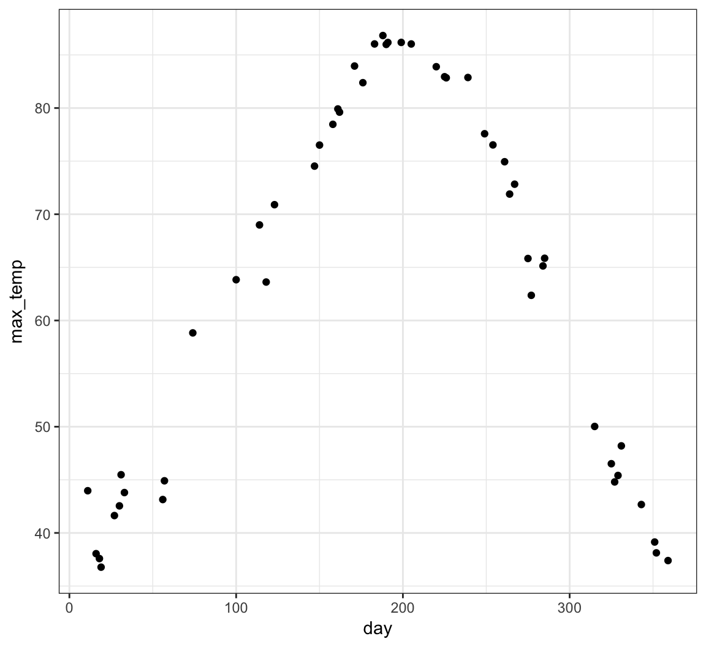
Yeast Gene Expression
Yeast cells were synchronized so that they were on the same approximate cell cycle timing. The goal was to understand how gene expression varies over the cell cycle from a genome-wide perspective.
> load("./data/spellman.RData")
> time
[1] 0 30 60 90 120 150 180 210 240 270 330 360 390
> dim(gene_expression)
[1] 5981 13
> gene_expression[1:6,1:5]
0 30 60 90 120
YAL001C 0.69542786 -0.4143538 3.2350520 1.6323737 -2.1091820
YAL002W -0.01210662 3.0465649 1.1062193 4.0591467 -0.1166399
YAL003W -2.78570526 -1.0156981 -2.1387564 1.9299681 0.7797033
YAL004W 0.55165887 0.6590093 0.5857847 0.3890409 -1.0009777
YAL005C -0.53191556 0.1577985 -1.2401448 0.8170350 -1.3520947
YAL007C -0.86693416 -1.1642322 -0.6359588 1.1179131 1.9587021Proportion Variance Explained
> p <- pca(gene_expression, space="rows")
> ggplot(data.frame(pc=1:13, pve=p$pve)) +
+ geom_point(aes(x=pc,y=pve), size=2)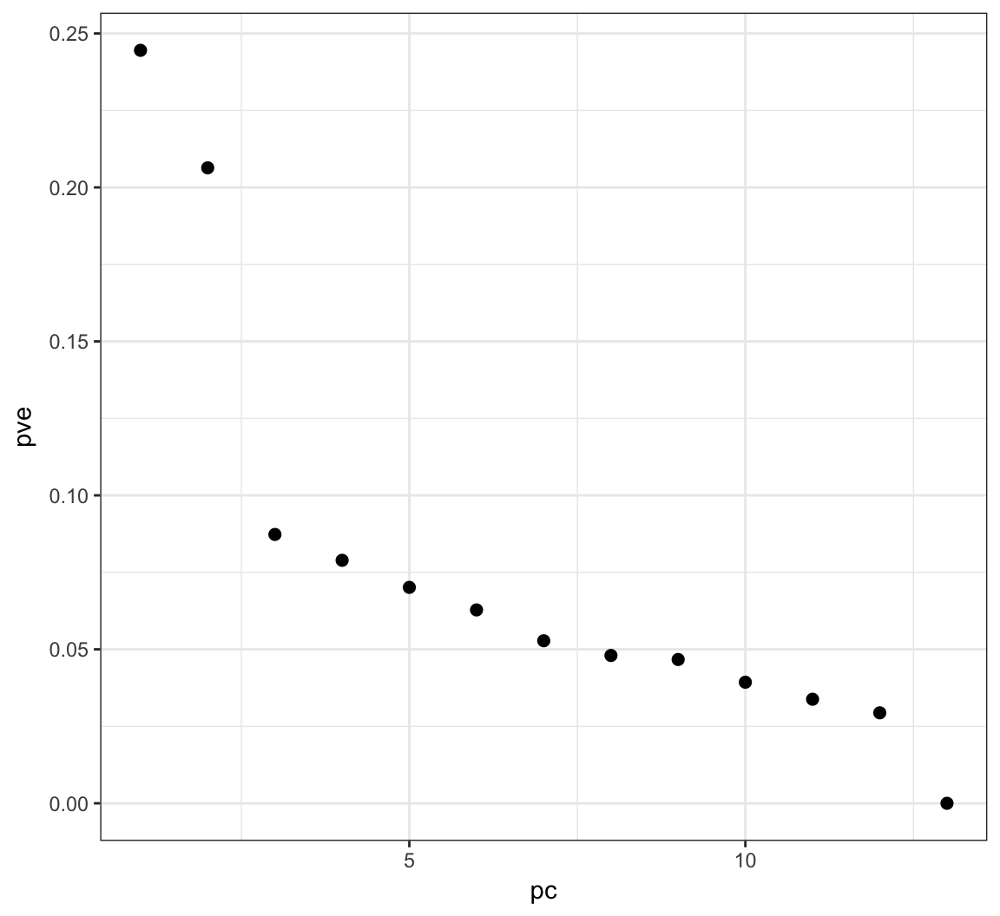
PCs vs Time (with Smoothers)
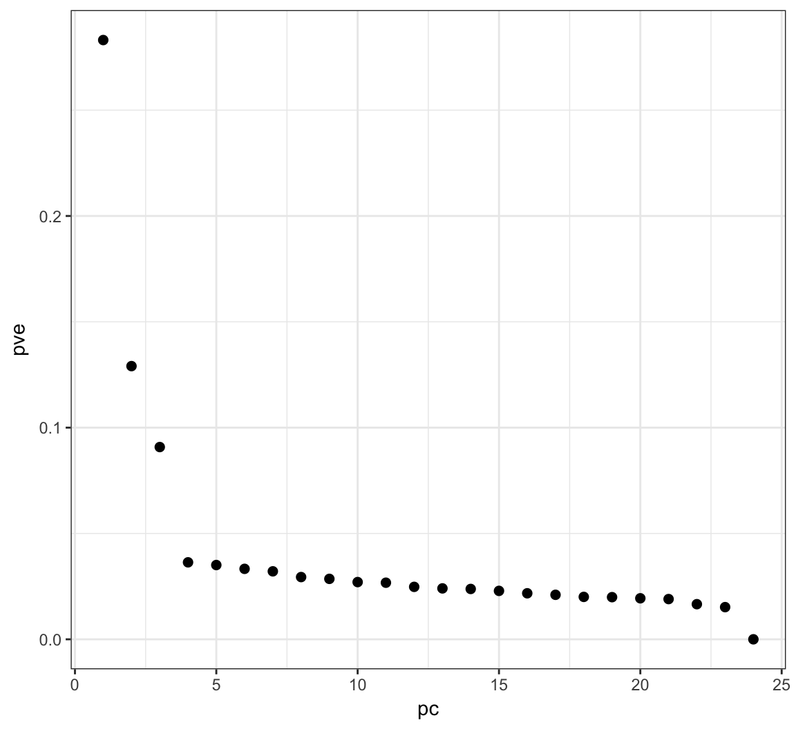
HapMap Genotypes
Recall the example HapMap data used to demonstrate the MCMC algorithm for estimating structure. We curated a small data set that cleanly separates human subpopulations.
> hapmap <- read.table("./data/hapmap_sample.txt")
> dim(hapmap)
[1] 400 24
> hapmap[1:6,1:6]
NA18516 NA19138 NA19137 NA19223 NA19200 NA19131
rs2051075 0 1 2 1 1 1
rs765546 2 2 0 0 0 0
rs10019399 2 2 2 1 1 2
rs7055827 2 2 1 2 0 2
rs6943479 0 0 2 0 1 0
rs2095381 1 2 1 2 1 1Proportion Variance Explained
> p <- pca(hapmap, space="rows")
> ggplot(data.frame(pc=(1:ncol(hapmap)), pve=p$pve)) +
+ geom_point(aes(x=pc,y=pve), size=2)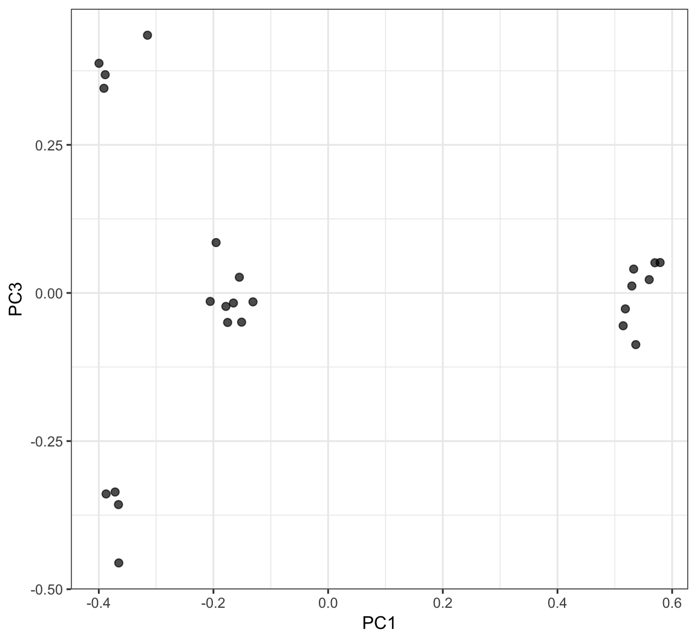
PC1 vs PC2 Biplot
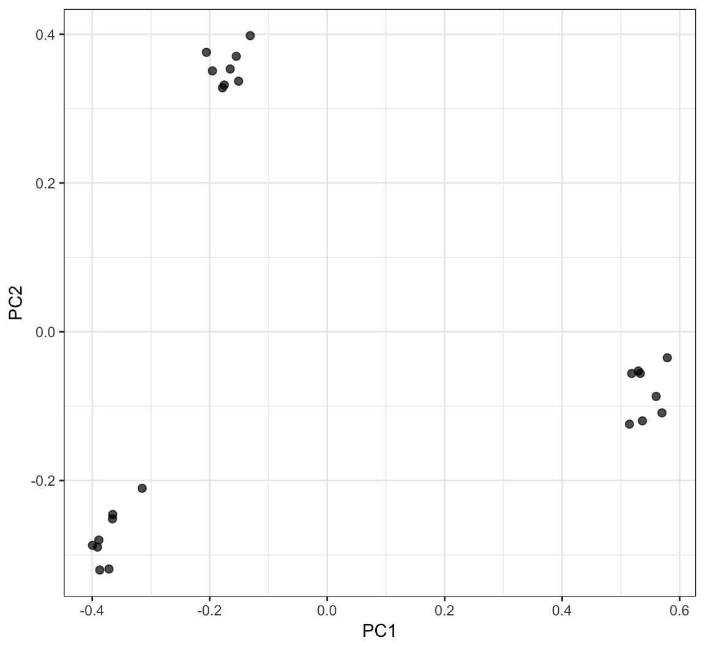
PC1 vs PC3 Biplot

PC2 vs PC3 Biplot
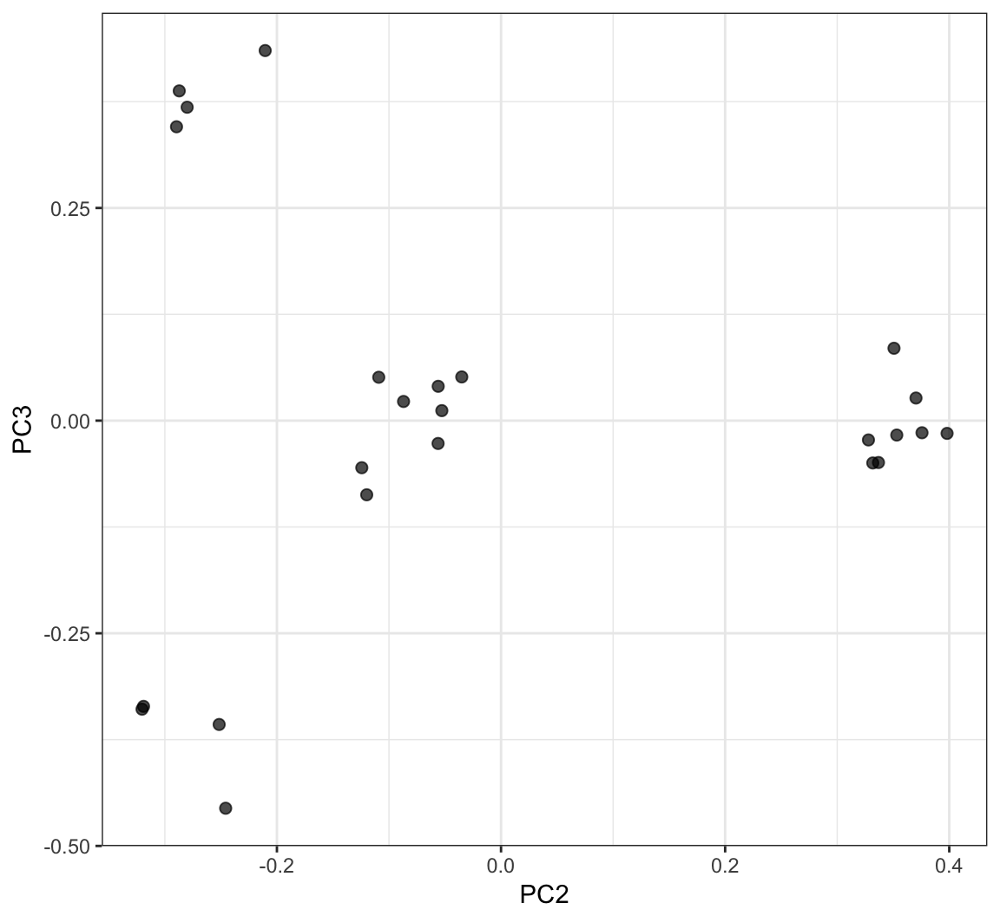
HD Latent Variable Models
Definition
Latent variables (or hidden variables) are random variables that are present in the underlying probabilistic model of the data, but they are unobserved.
In high-dimensional data, there may be latent variables present that affect many variables simultaneously.
These are latent variables that induce systematic variation. A topic of much interest is how to estimate these and incorporate them into further HD inference procedures.
Model
Suppose we have observed data \({\boldsymbol{Y}}_{m \times n}\) of \(m\) variables with \(n\) observations each. Suppose there are \(r\) latent variables contained in the \(r\) rows of \({\boldsymbol{Z}}_{r \times n}\) where
\[ {\operatorname{E}}\left[{\boldsymbol{Y}}_{m \times n} \left. \right| {\boldsymbol{Z}}_{r \times n} \right] = {\boldsymbol{\Phi}}_{m \times r} {\boldsymbol{Z}}_{r \times n}. \]
Let’s also assume that \(m \gg n > r\). The latent variables \({\boldsymbol{Z}}\) induce systematic variation in variable \({\boldsymbol{y}}_i\) parameterized by \({\boldsymbol{\phi}}_i\) for \(i = 1, 2, \ldots, m\).
Estimation
There exist methods for estimating the row space of \({\boldsymbol{Z}}\) with probability 1 as \(m \rightarrow \infty\) for a fixed \(n\) in two scenarios.
Leek (2011) shows how to do this when \({\boldsymbol{y}}_i | {\boldsymbol{Z}}\sim \text{MVN}({\boldsymbol{\phi}}_i {\boldsymbol{Z}}, \sigma^2_i {\boldsymbol{I}})\), and the \({\boldsymbol{y}}_i | {\boldsymbol{Z}}\) are jointly independent.
Chen and Storey (2015) show how to do this when the \({\boldsymbol{y}}_i | {\boldsymbol{Z}}\) are distributed according to a single parameter exponential family distribution with mean \({\boldsymbol{\phi}}_i {\boldsymbol{Z}}\), and the \({\boldsymbol{y}}_i | {\boldsymbol{Z}}\) are jointly independent.
Jackstraw
Suppose we have a reasonable method for estimating \({\boldsymbol{Z}}\) in the model
\[ {\operatorname{E}}\left[{\boldsymbol{Y}}\left. \right| {\boldsymbol{Z}}\right] = {\boldsymbol{\Phi}}{\boldsymbol{Z}}. \]
The jackstraw method allows us to perform hypothesis tests of the form
\[ H_0: {\boldsymbol{\phi}}_i = {\boldsymbol{0}}\mbox{ vs } H_1: {\boldsymbol{\phi}}_i \not= {\boldsymbol{0}}. \]
We can also perform this hypothesis test on any subset of the columns of \({\boldsymbol{\Phi}}\).
This is a challening problem because we have to “double dip” in the data \({\boldsymbol{Y}}\), first to estimate \({\boldsymbol{Z}}\), and second to perform significance tests on \({\boldsymbol{\Phi}}\).
Procedure
The first step is to form estimate \(\hat{{\boldsymbol{Z}}}\) and then test statistic \(t_i\) that performs the hypothesis test for each \({\boldsymbol{\phi}}_i\) from \({\boldsymbol{y}}_i\) and \(\hat{{\boldsymbol{Z}}}\) (\(i=1, \ldots, m\)). Assume that the larger \(t_i\) is, the more evidence there is against the null hypothesis in favor of the alternative.
Next we randomly select \(s\) rows of \({\boldsymbol{Y}}\) and permute them to create data set \({\boldsymbol{Y}}^{0}\). Let this set of \(s\) variables be indexed by \(\mathcal{S}\). This breaks the relationship between \({\boldsymbol{y}}_i\) and \({\boldsymbol{Z}}\), thereby inducing a true \(H_0\), for each \(i \in \mathcal{S}\).
We estimate \(\hat{{\boldsymbol{Z}}}^{0}\) from \({\boldsymbol{Y}}^{0}\) and again obtain test statistics \(t_i^{0}\). Specifically, the test statistics \(t_i^{0}\) for \(i \in \mathcal{S}\) are saved as draws from the null distribution.
We repeat permutation procedure \(B\) times, and then utilize all saved \(sB\) permutation null statistics to calculate empirical p-values:
\[ p_i = \frac{1}{sB} \sum_{b=1}^B \sum_{k \in \mathcal{S}_b} 1\left(t_i \geq t_k^{0b} \right). \]
Example: Yeast Cell Cycle
Recall the yeast cell cycle data from earlier. We will test which genes have expression significantly associated with PC1 and PC2 since these both capture cell cycle regulation.
> library(jackstraw)
> load("./data/spellman.RData")
> time
[1] 0 30 60 90 120 150 180 210 240 270 330 360 390
> dim(gene_expression)
[1] 5981 13
> dat <- t(scale(t(gene_expression), center=TRUE, scale=FALSE))Test for associations between PC1 and each gene, conditioning on PC1 and PC2 being relevant sources of systematic variation.
> jsobj <- jackstraw(dat, r1=1, r=2, B=500, s=50, verbose=FALSE)
> jsobj$p.value %>% qvalue() %>% hist()
This is the most significant gene plotted with PC1.
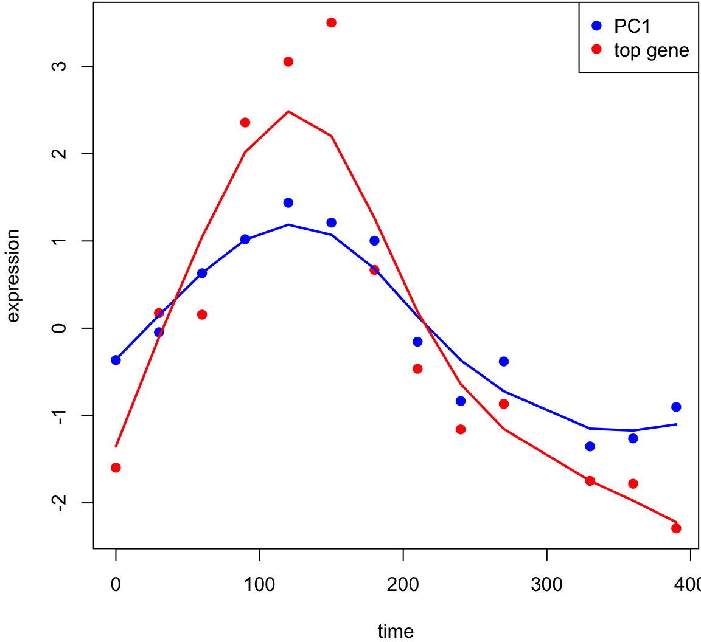
Test for associations between PC2 and each gene, conditioning on PC1 and PC2 being relevant sources of systematic variation.
> jsobj <- jackstraw(dat, r1=2, r=2, B=500, s=50, verbose=FALSE)
> jsobj$p.value %>% qvalue() %>% hist()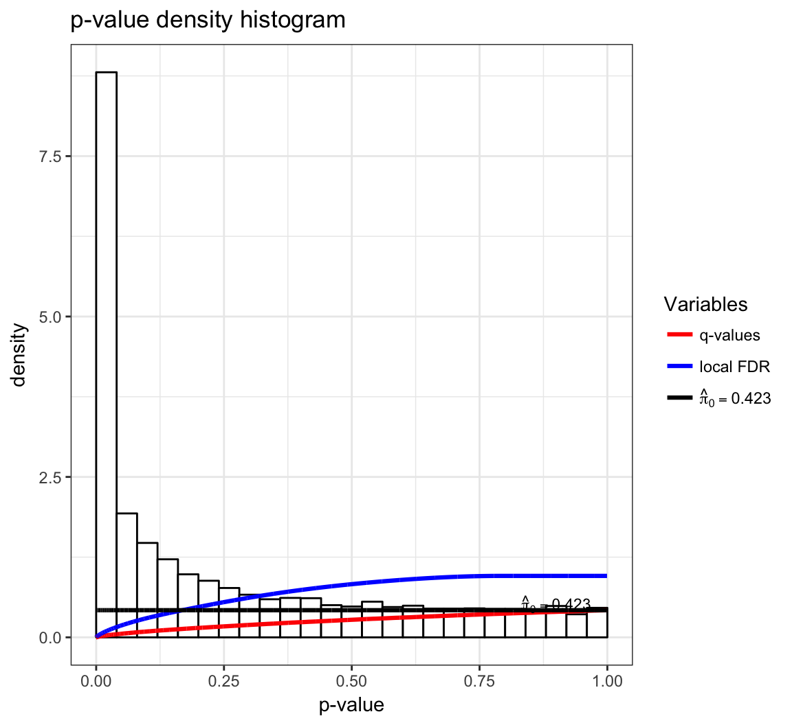
This is the most significant gene plotted with PC2.
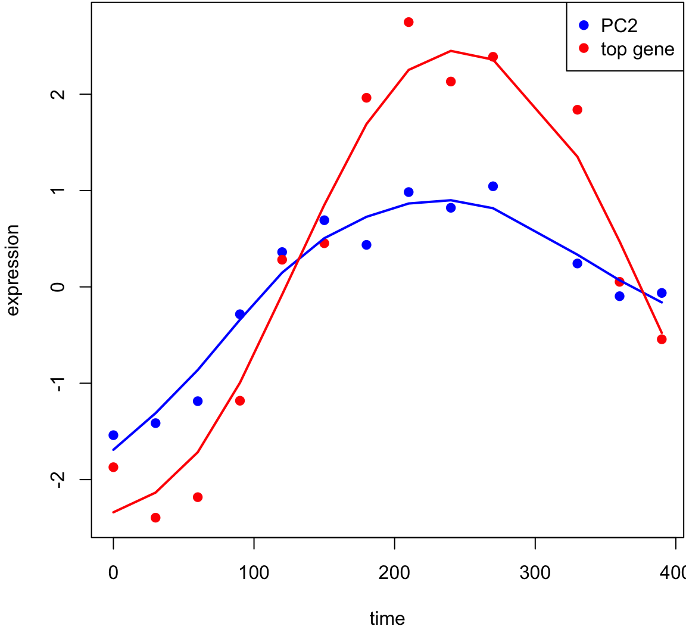
Surrogate Variable Analysis
The surrogate variable analysis (SVA) model combines the many responses model with the latent variable model introduced above:
\[ {\boldsymbol{Y}}_{m \times n} = {\boldsymbol{B}}_{m \times d} {\boldsymbol{X}}_{d \times n} + {\boldsymbol{\Phi}}_{m \times r} {\boldsymbol{Z}}_{r \times n} + {\boldsymbol{E}}_{m \times n} \]
where \(m \gg n > d + r\).
Here, only \({\boldsymbol{Y}}\) and \({\boldsymbol{X}}\) are observed, so we must combine many regressors model fitting techniques with latent variable estimation.
The variables \({\boldsymbol{Z}}\) are called surrogate variables for what would be a complete model of all systematic variation.
Procedure
The main challenge is that the row spaces of \({\boldsymbol{X}}\) and \({\boldsymbol{Z}}\) may overlap. Even when \({\boldsymbol{X}}\) is the result of a randomized experiment, there will be a high probability that the row spaces of \({\boldsymbol{X}}\) and \({\boldsymbol{Z}}\) have some overlap.
Therefore, one cannot simply estimate \({\boldsymbol{Z}}\) by applying a latent variable esitmation method on the residuals \({\boldsymbol{Y}}- \hat{{\boldsymbol{B}}} {\boldsymbol{X}}\) or on the observed response data \({\boldsymbol{Y}}\). In the former case, we will only estimate \({\boldsymbol{Z}}\) in the space orthogonal to \(\hat{{\boldsymbol{B}}} {\boldsymbol{X}}\). In the latter case, the estimate of \({\boldsymbol{Z}}\) may modify the signal we can estimate in \({\boldsymbol{B}}{\boldsymbol{X}}\).
A recent method, takes an EM approach to esitmating \({\boldsymbol{Z}}\) in the model
\[ {\boldsymbol{Y}}_{m \times n} = {\boldsymbol{B}}_{m \times d} {\boldsymbol{X}}_{d \times n} + {\boldsymbol{\Phi}}_{m \times r} {\boldsymbol{Z}}_{r \times n} + {\boldsymbol{E}}_{m \times n}. \]
It is shown to be necessary to penalize the likelihood in the estimation of \({\boldsymbol{B}}\) — i.e., form shrinkage estimates of \({\boldsymbol{B}}\) — in order to properly balance the row spaces of \({\boldsymbol{X}}\) and \({\boldsymbol{Z}}\).
The regularized EM algorithm, called cross-dimensonal inference (CDI) iterates between
- Estimate \({\boldsymbol{Z}}\) from \({\boldsymbol{Y}}- \hat{{\boldsymbol{B}}}^{\text{Reg}} {\boldsymbol{X}}\)
- Estimate \({\boldsymbol{B}}\) from \({\boldsymbol{Y}}- \hat{{\boldsymbol{\Phi}}} \hat{{\boldsymbol{Z}}}\)
where \(\hat{{\boldsymbol{B}}}^{\text{Reg}}\) is a regularized or shrunken estimate of \({\boldsymbol{B}}\).
It can be shown that when the regularization can be represented by a prior distribution on \({\boldsymbol{B}}\) then this algorithm achieves the MAP.
Example: Kidney Expr by Age
In Storey et al. (2005), we considered a study where kidney samples were obtained on individuals across a range of ages. The goal was to identify genes with expression associated with age.
> library(edge)
> library(splines)
> load("./data/kidney.RData")
> age <- kidcov$age
> sex <- kidcov$sex
> dim(kidexpr)
[1] 34061 72
> cov <- data.frame(sex = sex, age = age)
> null_model <- ~sex
> full_model <- ~sex + ns(age, df = 3)> de_obj <- build_models(data = kidexpr, cov = cov,
+ null.model = null_model,
+ full.model = full_model)
> de_lrt <- lrt(de_obj, nullDistn = "bootstrap", bs.its = 100, verbose=FALSE)
> qobj1 <- qvalueObj(de_lrt)
> hist(qobj1)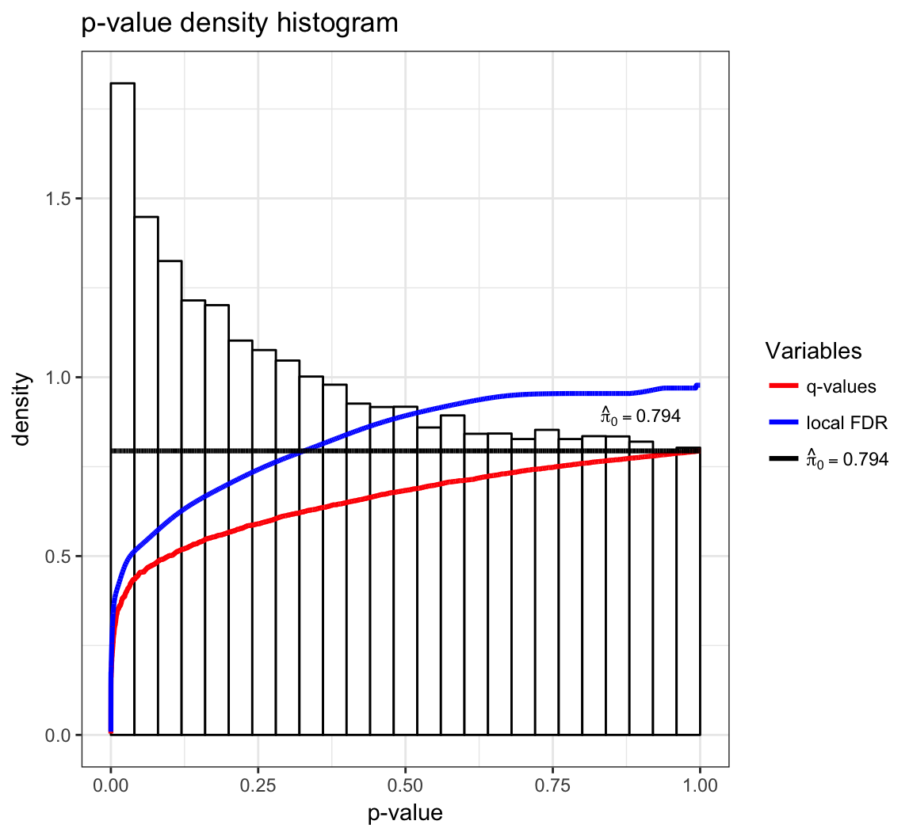
Now that we have completed a standard generalized LRT, let’s estimate \({\boldsymbol{Z}}\) (the surrogate variables) using the sva package as accessed via the edge package.
> dim(nullMatrix(de_obj))
[1] 72 2
> de_sva <- apply_sva(de_obj, n.sv=4, method="irw", B=10)
Number of significant surrogate variables is: 4
Iteration (out of 10 ):1 2 3 4 5 6 7 8 9 10
> dim(nullMatrix(de_sva))
[1] 72 6
> de_svalrt <- lrt(de_sva, nullDistn = "bootstrap", bs.its = 100, verbose=FALSE)> qobj2 <- qvalueObj(de_svalrt)
> hist(qobj2)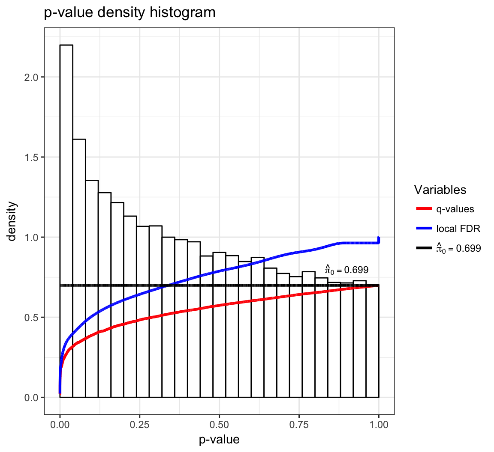
> summary(qobj1)
Call:
qvalue(p = pval)
pi0: 0.7939407
Cumulative number of significant calls:
<1e-04 <0.001 <0.01 <0.025 <0.05 <0.1 <1
p-value 26 145 798 1709 2966 5392 34061
q-value 0 0 2 3 8 26 34061
local FDR 0 0 2 2 2 12 34061> summary(qobj2)
Call:
qvalue(p = pval)
pi0: 0.698907
Cumulative number of significant calls:
<1e-04 <0.001 <0.01 <0.025 <0.05 <0.1 <1
p-value 28 158 1014 2067 3555 6141 34061
q-value 0 0 0 3 6 47 34061
local FDR 0 0 0 1 4 29 34054P-values from two analyses are fairly different.
> data.frame(lrt=-log10(qobj1$pval), sva=-log10(qobj2$pval)) %>%
+ ggplot() + geom_point(aes(x=lrt, y=sva), alpha=0.3) + geom_abline()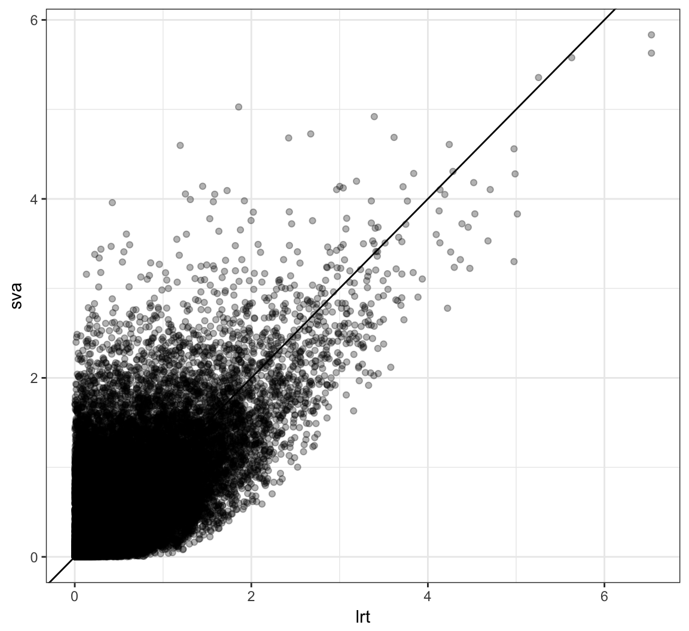
Extras
Source
Session Information
> sessionInfo()
R version 3.3.2 (2016-10-31)
Platform: x86_64-apple-darwin13.4.0 (64-bit)
Running under: macOS Sierra 10.12.4
locale:
[1] en_US.UTF-8/en_US.UTF-8/en_US.UTF-8/C/en_US.UTF-8/en_US.UTF-8
attached base packages:
[1] splines parallel stats graphics grDevices utils
[7] datasets methods base
other attached packages:
[1] edge_2.6.0 Biobase_2.34.0
[3] BiocGenerics_0.20.0 jackstraw_1.1
[5] qvalue_2.1.1 MASS_7.3-47
[7] broom_0.4.2 dplyr_0.5.0
[9] purrr_0.2.2 readr_1.1.0
[11] tidyr_0.6.2 tibble_1.3.0
[13] ggplot2_2.2.1 tidyverse_1.1.1
[15] knitr_1.15.1 magrittr_1.5
[17] devtools_1.12.0
loaded via a namespace (and not attached):
[1] httr_1.2.1 jsonlite_1.4
[3] modelr_0.1.0 assertthat_0.2.0
[5] highr_0.6 stats4_3.3.2
[7] cellranger_1.1.0 yaml_2.1.14
[9] RSQLite_1.1-2 backports_1.0.5
[11] lattice_0.20-35 digest_0.6.12
[13] rvest_0.3.2 minqa_1.2.4
[15] colorspace_1.3-2 htmltools_0.3.6
[17] Matrix_1.2-10 plyr_1.8.4
[19] psych_1.7.5 XML_3.98-1.7
[21] haven_1.0.0 genefilter_1.56.0
[23] xtable_1.8-2 revealjs_0.9
[25] corpcor_1.6.9 scales_0.4.1
[27] lme4_1.1-13 annotate_1.52.1
[29] mgcv_1.8-17 IRanges_2.8.2
[31] withr_1.0.2 lazyeval_0.2.0
[33] mnormt_1.5-5 survival_2.41-3
[35] snm_1.22.0 readxl_1.0.0
[37] memoise_1.1.0 evaluate_0.10
[39] nlme_3.1-131 forcats_0.2.0
[41] xml2_1.1.1 foreign_0.8-68
[43] tools_3.3.2 hms_0.3
[45] stringr_1.2.0 S4Vectors_0.12.2
[47] lfa_1.4.0 munsell_0.4.3
[49] AnnotationDbi_1.36.2 grid_3.3.2
[51] RCurl_1.95-4.8 nloptr_1.0.4
[53] bitops_1.0-6 labeling_0.3
[55] rmarkdown_1.5 codetools_0.2-15
[57] gtable_0.2.0 DBI_0.6-1
[59] reshape2_1.4.2 R6_2.2.0
[61] lubridate_1.6.0 rprojroot_1.2
[63] stringi_1.1.5 sva_3.22.0
[65] Rcpp_0.12.10